Back to Homepage
Overview
Rasterization is the cornerstone of rendering processes. In this homework, we implemented a simple rasterizer for drawing triangles, with support for supersampling, transforms, and texture mapping. We successfully implemented all features mentioned in the six tasks, as well as some extra credit features for Task 1 and 2. In the end, we were able to produce well-rendered images with our rasterizer, and we gained a solid understanding of the rasterization pipeline.
basic/test3.svg using our rasterizer. |
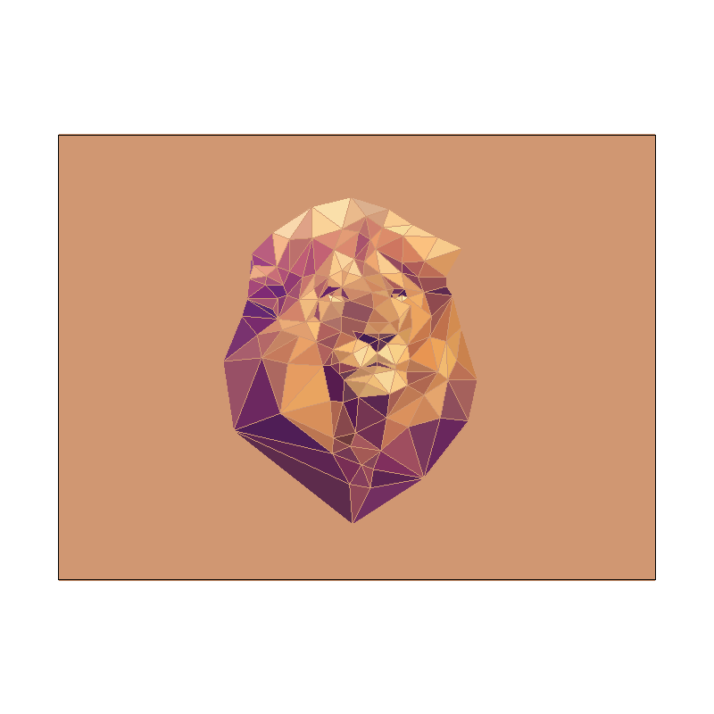
illustration/05_lion.svg using our rasterizer. |
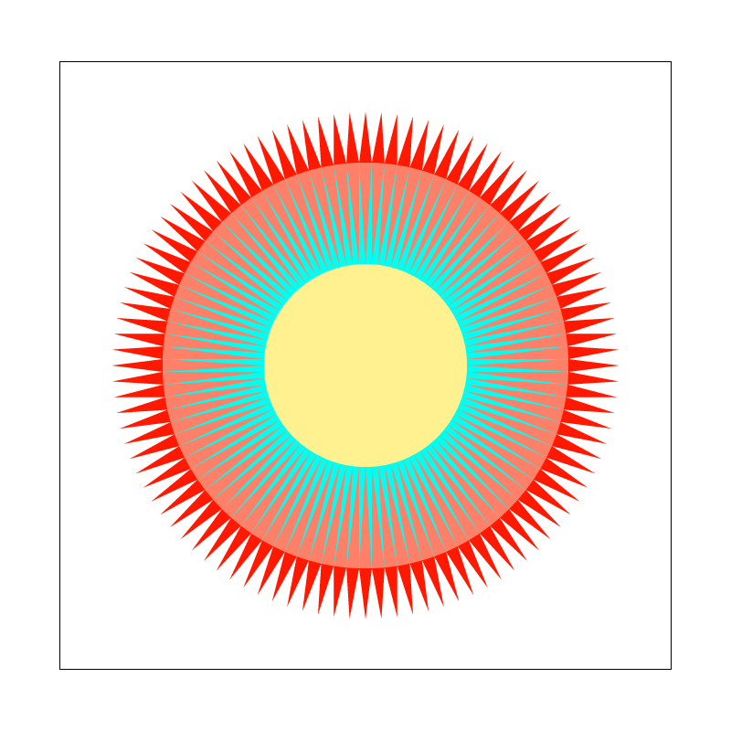
illustration/04_sun.svg using our rasterizer. |
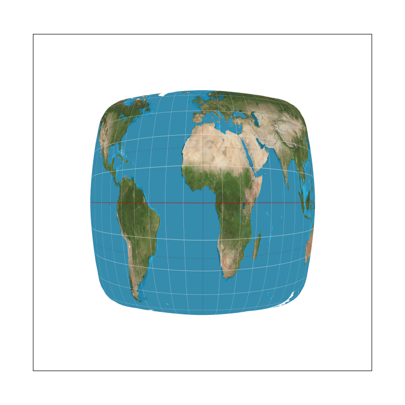
texmap/test1.svg using our rasterizer. |
Section I: Rasterization
Part 1: Rasterizing single-color triangles
In this task, we implemented the rasterize_triangle function to draw triangles on the screen.
We rasterize triangles in the following steps:
- Obtain the triangle’s bounding box by finding the maximal and minimal \(x, y\) coordinates, and then “clamp” the bounding box within the screen boundaries (width and height).
- Calculate the constants in the line equations, including \(A_i, B_i\), and \(C_i\).
- For each location in the bounding box, sample it at the center and evaluate the line equations \(L_0(x + 0.5, y + 0.5)\), \(L_1(x + 0.5, y + 0.5)\), \(L_3(x + 0.5, y + 0.5)\). Check if the results share the same sign; if so, we consider the location is inside the triangle. We check for identical signs instead of a certain direction to take account of both counter-clockwise and clockwise triangle labeling. We also allow all boundary conditions to be considered inside the triangle (e.g., count all \(>=\) and \(<=\), drawing all pixels on edge.
- If a point is considered inside the triangle in the previous step, set the pixel’s color in the sample buffer to be the given color.
basic/test4.svg are shown below.

basic/test4.svg using code from Task 1. |
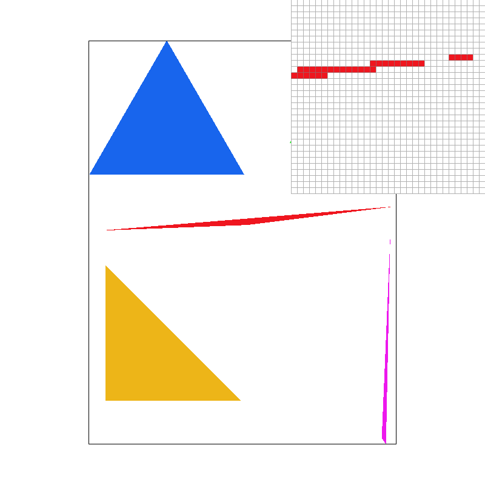
basic/test4.svg with inspector highlighting the tip of the red triangle.
Note the jaggies from aliasing.
|
Part 1 Extra Credit: Incrementing the Line Equations
We observed that the line equations \(L_i(x, y) = A_ix + B_iy + C_i\) is linear in \(x\) and \(y\), respectively. This means that $$L_i(x + 1, y) = A_i(x + 1) + B_iy + C_i = L_i(x, y) + A_i,$$ and $$L_i(x, y + 1) = A_ix + B_i(y + 1) + C_i = L_i(x, y) + B_i.$$ Thus, instead of explicitly calculating the line equations at each point, we can calculate them at the beginning of the loop and increment by \(A_i\) or \(B_i\), respectively. This incremental trick can save us much time from repeated multiplication.
// Evaluating the line equation at the starting location
int pt[] = { min_x_screen, min_y_screen };
float L_0_row = al0 * (pt[0] + 0.5) + bl0 * (pt[1] + 0.5) + cl0;
float L_1_row = al1 * (pt[0] + 0.5) + bl1 * (pt[1] + 0.5) + cl1;
float L_2_row = al2 * (pt[0] + 0.5) + bl2 * (pt[1] + 0.5) + cl2;
for (pt[1] = min_y_screen; pt[1] < max_y_screen; pt[1]++)
{
float L_0 = L_0_row;
float L_1 = L_1_row;
float L_2 = L_2_row;
for (pt[0] = min_x_screen; pt[0] < max_x_screen; pt[0]++)
{
// Pass three line test
// Consider boundary as part of triangle as suggested in spec
if ((L_0 >= 0 && L_1 >= 0 && L_2 >= 0) ||
(L_0 <= 0 && L_1 <= 0 && L_2 <= 0))
sample_buffer[pt[1] * width + pt[0]] = color;
// Increment along the x-axis by a_i
L_0 += al0;
L_1 += al1;
L_2 += al2;
}
// Increment along the y-axis by b_i
L_0_row += bl0;
L_1_row += bl1;
L_2_row += bl2;
}
}
Performance results are recorded in the following table.
| File name | Original Task 1 | Task 1, Incremental version |
|---|---|---|
| basic/test3.svg | 16.324ms | 9.7509ms |
| basic/test4.svg | 0.5272ms | 0.29ms |
| basic/test5.svg | 1.4411ms | 0.6873ms |
| basic/test6.svg | 0.9667ms | 0.5385ms |
On average, we see a \(45.5%\) increase in speed by implementing this trick. We also implemented an incremental version for Task 2, as the supersampling could also benefit from this step. However, we don’t see such a huge speedup (only \(~10%\) faster for a sampling rate of 16), potentially due to additional float point multiplications at the sub-pixel level.
Part 2: Antialiasing triangles
In this task, we implemented supersampling for our rasterizer. The main idea of our supersampling algorithm is to sample more than one location within a pixel and average the color when resolving to the actual frame buffer. This is to approximate the 1-pixel box filter (convolution) used in antialiasing, achieving a similar effect of reducing frequencies higher than the Nyquist frequency. The more sampling taken within the pixel (at proper locations), the better the approximated average is. For the data structure, we chose to use a large, higher-resolution sample buffer to store sub-pixel sampling values across different triangles, and we only average the value when resolving to the frame buffer. In this way, we avoid the loss of quality when a pixel is evaluated multiple times by different triangles (i.e., on the border). This comes with a higher memory cost that grows fast as the sampling rate increases. We always resize when the sampling rate changes to keep only the needed memory.
To implement supersampling, we modified the following existing methods: fill_pixel,
rasterize_triangle, set_sample_rate, set_framebuffer_target,
and resolve_to_framebuffer. Changes include:
- Properly resize the sample buffer to hold \(\text{width}*\text{height}*\text{sampling rate}\) sampling points.
- Add inner loops inside the original rasterization algorithm to loop through all sampling locations within the pixel. These locations are uniformly spread out inside the pixel location, having the same distance between each other. That is, they should be \(1 / \sqrt{\text{sampling rate}} \) apart from each other on both axis.
- Evaluate these sampling locations and save the color to the now-resized sample buffer.
- When resolving to the frame buffer, loop through all sampled values inside each pixel and average them; assign the average to the location in the frame buffer.
After these modifications, we observe good antialiasing effects on rasterized triangles.
The results of basic/test4.svg are shown below, with a sampling rate of 1, 4, and 16.
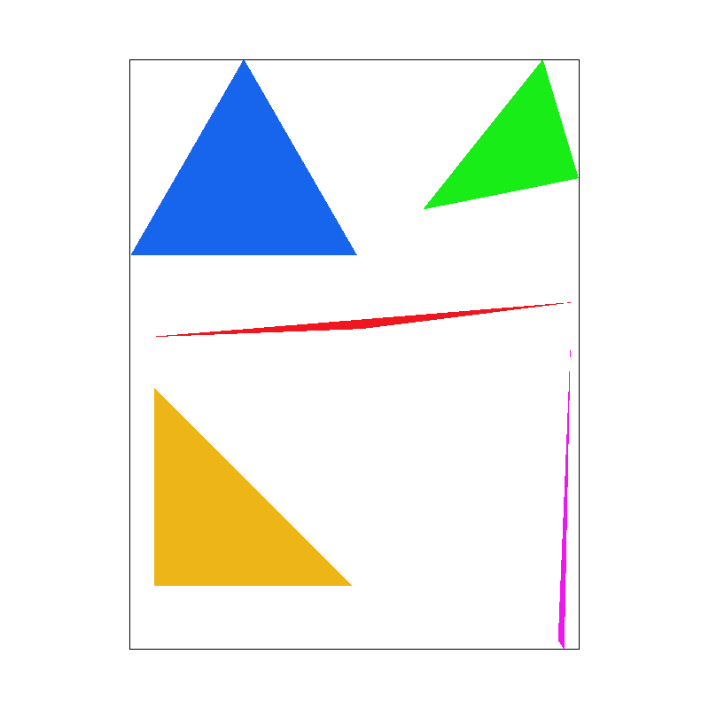
basic/test4.svg using code from Task 2, with a sampling rate of 1. |
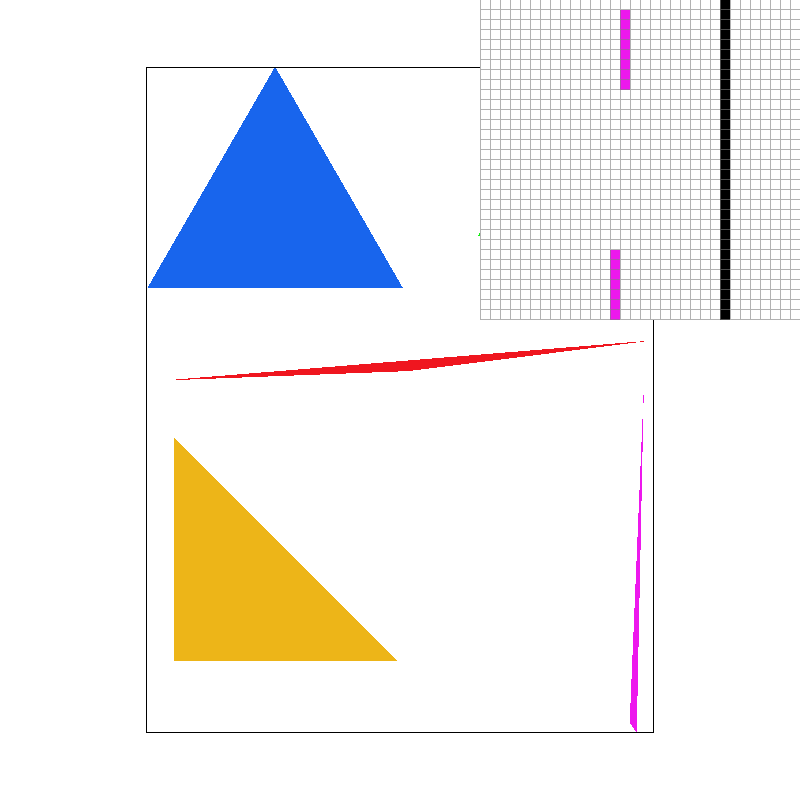
basic/test4.svg with a sampling rate of 1. The inspector highlights the tip of the thin triangle.
Note the jaggies from aliasing.
|
basic/test4.svg using code from Task 2, with a sampling rate of 4. |
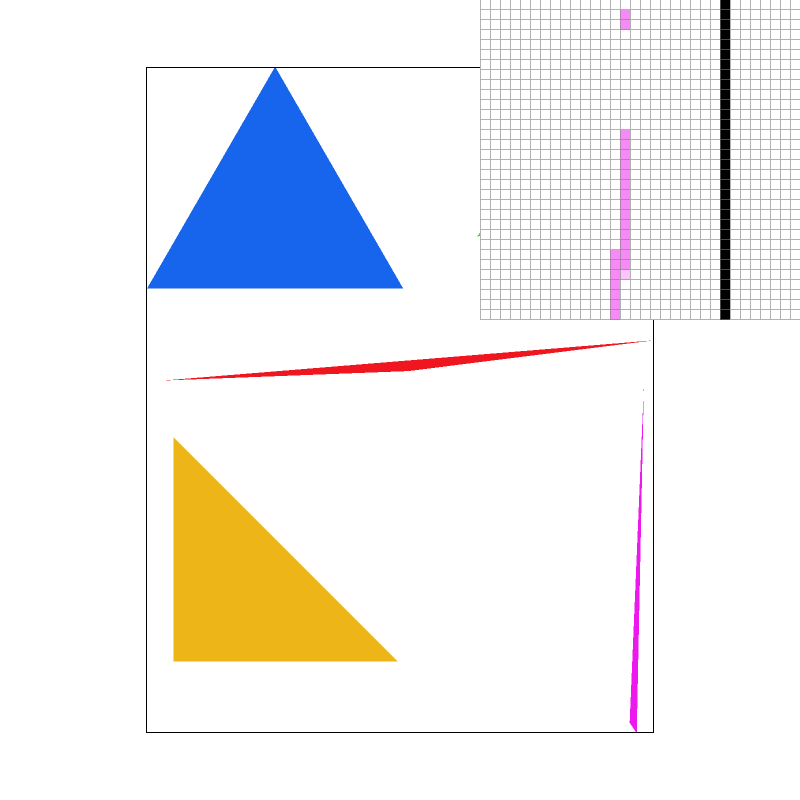
basic/test4.svg with a sampling rate of 4. The inspector highlights the tip of the thin triangle.
The tip is now more connected.
|
basic/test4.svg using code from Task 2, with a sampling rate of 16. |
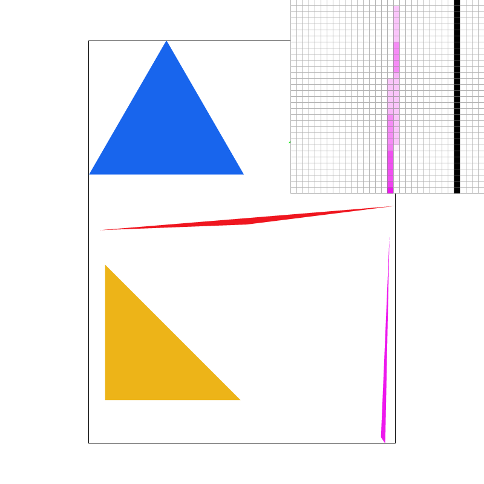
basic/test4.svg with a sampling rate of 16. The inspector highlights the tip of the thin triangle.
Jaggies are barely noticeable.
|
We can see that jaggies are present in the first image at the top of the thin triangle (sampling rate of 1), potentially because the triangle does not pass through the centers of some pixels. As we increase the sampling rate, we can see that the triangle becomes connected, and the edges are “softened” with partially colored pixels. This is because we sample at different spreading locations within the pixel at a higher resolution, so we can capture the triangle passing through off-centered points and approximately evaluate the percentage of the pixel covered by the triangle. Viewing the whole image, we can see most jaggies are removed as the sampling rate increases, achieving the desired antialiasing effect on rasterized triangles.
Part 2 Extra Credit: Jittered Sampling
We implemented jittered sampling and compared it with the regular grid supersampling pattern. A jittered pattern is a combination of a uniform grid pattern and a random pattern. Instead of a uniform grid pattern, we apply a random offset to both the \(x\) and \(y\) coordinates of the original sampling location. This offset is in the range of \((-0.5 / \sqrt{\text{sampling rate}}, 0.5 / \sqrt{\text{sampling rate}})\), so we still have only one sampling point for each sub-block. We now have a more random pattern while still preserving the relative spreading of points within the pixel. This avoids the regularity of the uniform pattern, as the regular grid pattern makes it easier for higher frequencies to alias with a lower frequency pattern, creating artifacts like the moiré patterns. The random offsets break the regular pattern and thus turn the aliasing into more random outputs, e.g., noise. This pattern is also better than full random sampling, as the better spacing approximates the average color better. As a result, jittered sampling sometimes works better than regular grid supersampling by replacing aliasing with some acceptable noise.
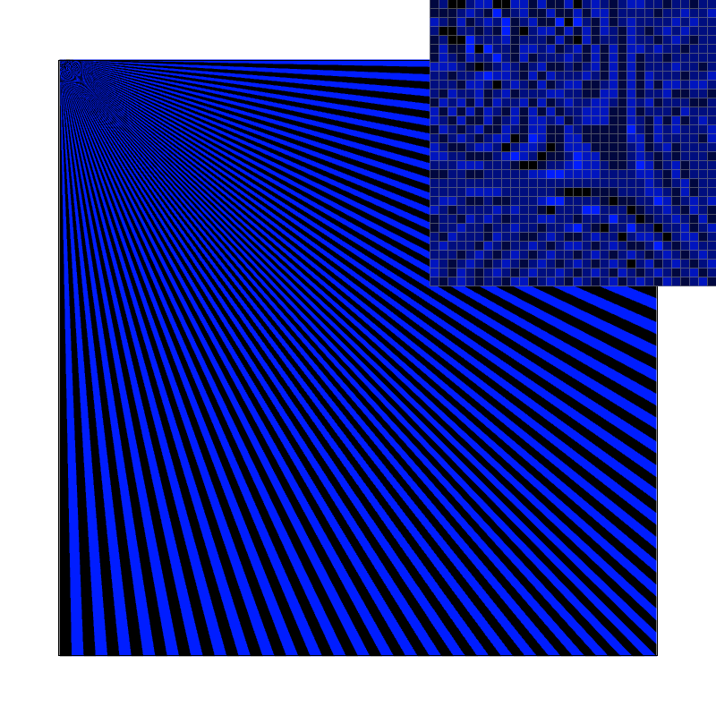
hardcore/01_degenerate_square1.svg using regular grid supersampling,
with a sampling rate of 4. Note the moiré-like pattern on the top left corner,
highlighted by the inspector.
|
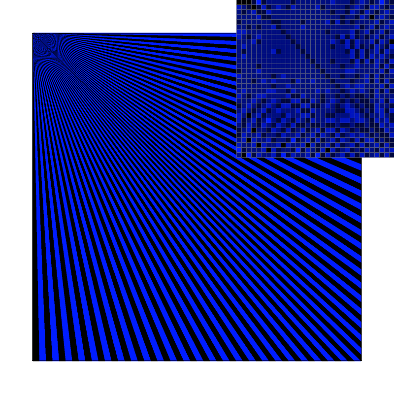
hardcore/01_degenerate_square1.svg using jittered supersampling,
with a sampling rate of 4. Note that the moiré-like pattern is partly replaced by noise,
highlighted by the inspector.
|
Observe the following images of hardcore/01_degenerate_square1.svg,
rendered with grid supersampling and jittered sampling. On the top left corner,
we can observe fewer artifact patterns on the jittered image, replaced with some blurred noise.
Part 3: Transforms
What we want the cubeman looks like
In my_robot.svg graph (Figure my_robot.svg render output), we move the cube man to the pose shown in the lecture slides and change the color to light blue. The lower part of the right hand is rotated 90 degrees counterclockwise. The whole left hand is rotated 90 degrees counterclockwise, and the head is rotated 15 degrees counterclockwise.

|
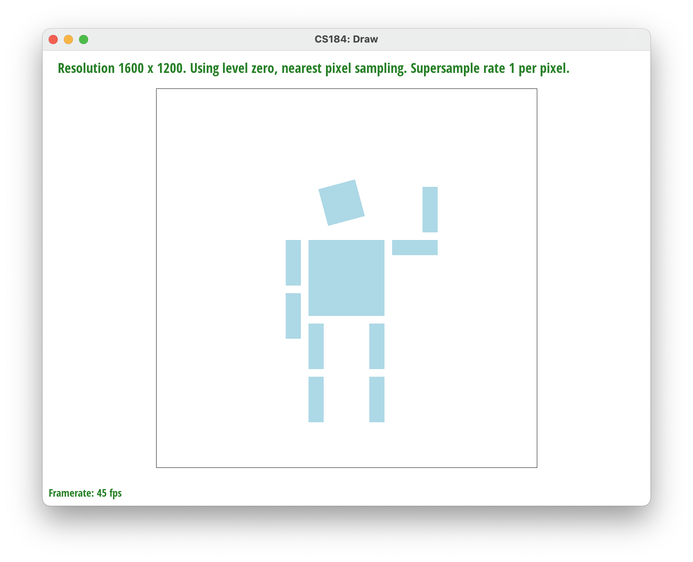
|
How we implement the transformation
In the lecture, we mentioned the idea that rotating around a given point is equivalent to translating negative distance, doing the rotation, and then translating back. To properly rotate those body parts, we need to figure out each body part’s correct rotation center (in a relative coordinate system). Below three graphs below show the three rotations, their relative coordinate system, and its center (in yellow) we want to rotate.
|
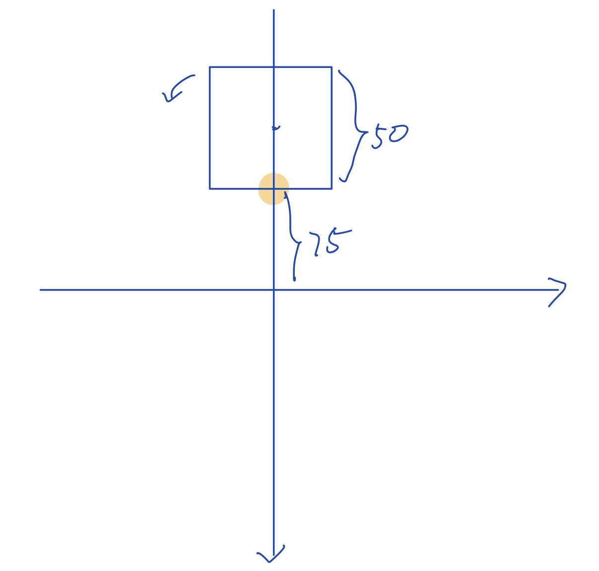
|

|

|
Section II: Sampling
Part 4: Barycentric coordinates
The barycentric coordinate is a “type of coordinate” system (just like the x y coordinate we commonly use) that is commonly used in triangles to interpolate values (e.g., coordinate, normal, color) inside a triangle with a triangle’s vertex value. For a given point in the triangle represented by (alpha, beta, gamma), its value is the weighted sum of its vertex value, where the weight is barycentric coordinate. The mathematical formula for the weighted sum is val(point in triangle) = val(A) * alpha + val(B) * beta + val(C) * gamma.
To derive a point’s barycentric coordinate using its (x, y) coordinate (as showned in figure below), we compute the point distance to an edge and its corresponding vertex. This can be considered “how far a point is to vertex inside the triangle.” For points that are closer to a particular vertex, their value should be relative to that vertex.
|
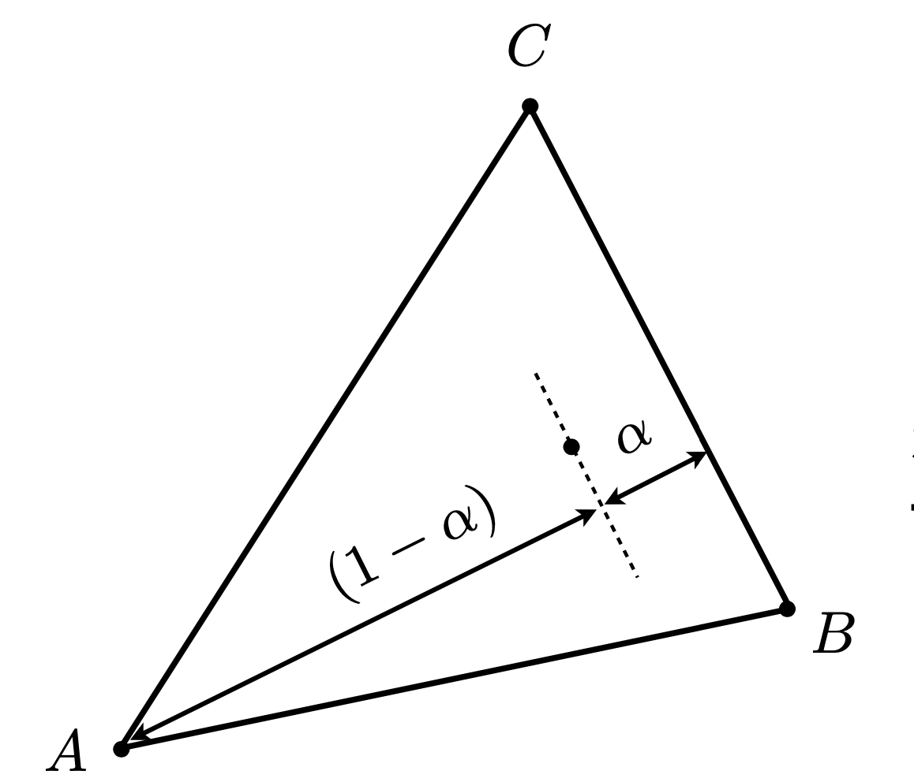
|
We use below color triangle below to explain how barycentric coordinates are used to interpolate the value given triangle vertex. The triangle is drawn by assigning three vertexes to take red, green, and blue colors. The color inside the triangle is a weighted sum of three vertexes. As can be seen from the graph, points close to vertex have a closer color as vertex color.
|
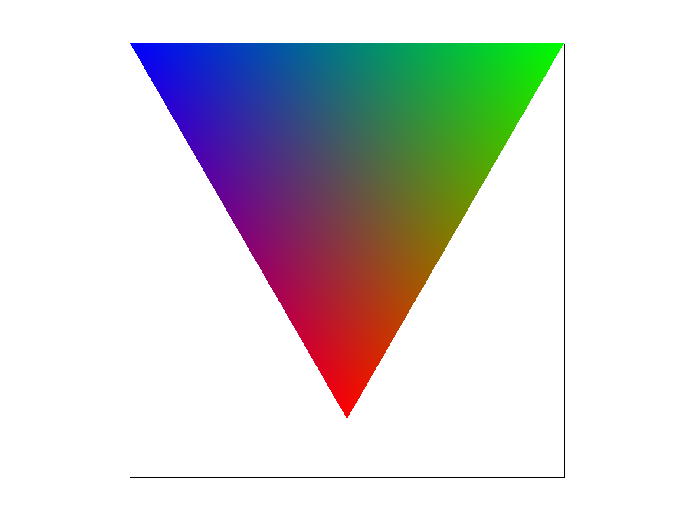
|
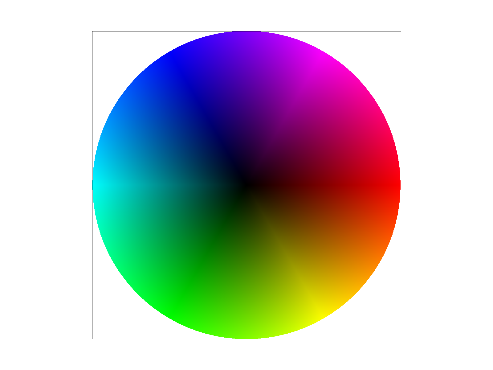
|
Part 5: "Pixel sampling" for texture mapping
Explain pixel sample in your own words
Pixel sampling is used when mapping one discrete coordinate space value to another discrete coordinate space given some contiguous transformation between the two coordinates space. Since the transformation is contiguous, the mapped point on other coordinate space is also contiguous, leading to the problem of “estimating value for a contiguous location under a discrete coordinate”. If the mapped coordinate space is also contiguous (e.g., a contiguous function map 2d location to value exist), we can use its value directly without a sample. One example of that is texture mapping, where we map the screen space (discrete) to texture space (discrete) through the texture lookup function (contiguous transformation).
In the nearest neighbor sample, we “estimate” the value for a contagious location using its closest discrete location in 2d. In the bilinear sample case, we “estimate” value for a contiguous location using a weighted sum of 4 of its closes discrete location, where the weight is “how close is the contiguous point to the discrete point.”
Explain how you implement pixel sample
In our nearest neighbor sample implementation, we use std::round to find the most relative discrete pixel coordinate of a given contiguous coordinate.
In our bilinear sample implementation, we use std::ceil and std::floor to find the nearest four discrete pixel coordinates and use a weighted sum of those 4 pixel’s values as sample value. The weight in the case is the distance between contigious sample point and 4 closest point.
Bilinear sample outperform nearest neighbour sample
The svg/texmap/test1.svg is a case where the bilinear interpolation result outperforms the nearest neighbor result.
- In the 1 sample per pixel case, the nearest neighbor sample only has dotted lines on the rendered graph, whereas the bilinear sample has a more contiguous line (compare left two figure).
- In the 16 samples per pixel case, the bilinear sample yield a smoother line than the nearest neighbor one (compare right two figure).
- Bilinear sample with 4x4 supersample yield best image that contain minimal aliasing effect
|
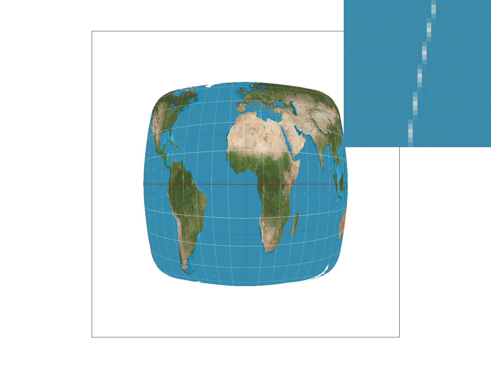
|
|
|
|
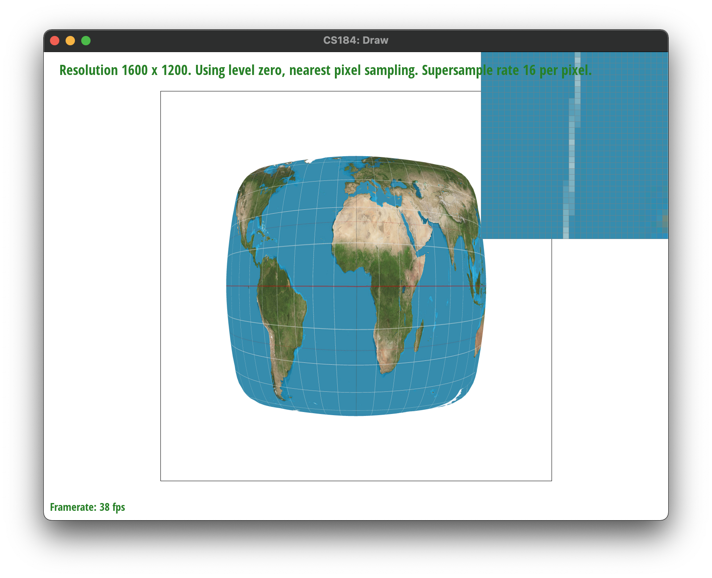
|
Comments on relative difference
- The nearest neighbor sample commonly runs much faster than the bilinear sample, making it more widely used to deploy the CV model as an edge device.
- The nearest neighbor sample takes the neighbor pixel value without blurring, which better preserves the photo’s sharpness.
- However, nearest neighbour sample also leads to more jaggie artifacts because the sample rate is low and the image contain high frequency information (sharp change around the line)
- The bilinear sample takes a weighted average of 4-pixel points around; this can be considered as some form of “filtering with sampling.” Since it “blurs out” some high-frequency information during the sample,
- Bilinear samples tend to have less jagged than the nearest neighbor sample. Consequently, bilinear samples tend to blur the resulting image and do not present the sharpness of the picture.
- Supersample address the aliasing effect better than only applying bilinear sample. 4x4 supersample yield better effect than 1x1 sammple with bilinear filter
Part 6: "Level sampling" with mipmaps for texture mapping
Explain level sample
When conducting texture sample, the footprint of a screen space pixel on texture space varies a lot, causing aliasing effect happen (i.e. 1 pixel on screen space is low frequency, large area on texture space is high frequency). The main idea of the level sample is a downsample the texture space and select a downsampled texture space level that has a similar resolution as a particular region in your screen space. The is mainly trying to avoid aliasing issues when sampling at a low rate (e.g., a small fraction of screen space that only takes 2x2 pixels) on high-frequency information (e.g., corresponding texture space take 20x20 pixels).
|
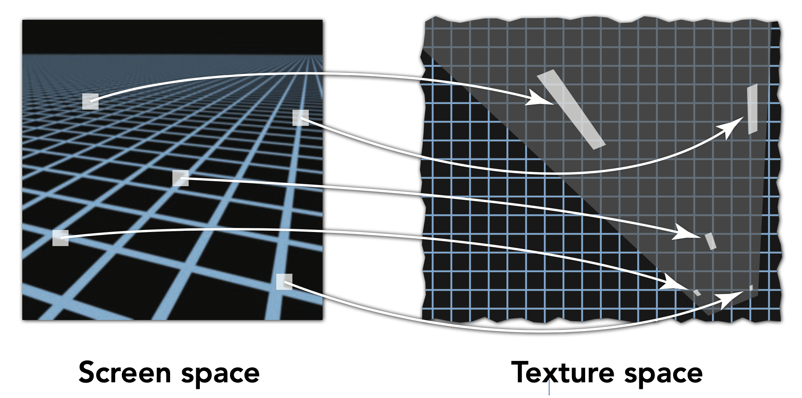
|
How to implement level sample
- Compute sample location (x, y); this can be supersampled location
- Compute (x,y)’s texture space coordinate (u,v)_xy using barycentric coordinate.
- Compute (x+1, y) and (y, x+1)’s texture space coordinate (u,v)_x+1y, (u,v)xy+1 using barycentric coordinate.
- Compute Euler distance between (u,v)_xy and (u,v)_x+1y, (u,v)xy+1 (L as showned in the graph below). Take the larger value. The value here means “how many pixels on texture space correspond to 1 pixel on sample space”. Taking the max value is an "safety" way to guarenteey no aliasing, but may cause over-blurring the result image. In practice, people also consider using average of Lx and Ly
- Take log2 on the larger value we just compute, and the result is the corresponding level. The log2 is because the texture space is downsampled with 2x2 on each level.
We have encountered a CLang bug when computing (x+1, y) (x, y+1)'s texture space coordinate, we have report that bug here Link to Piazza
|
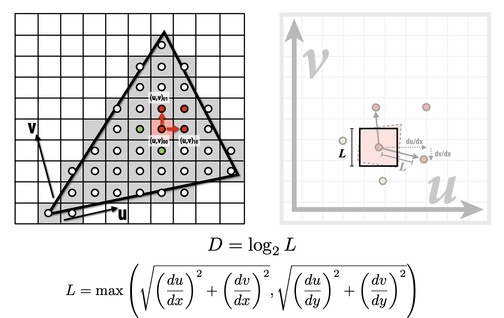
|
Tradeoff of pixel sample, level sample, supersample on speed, memory, and antialiasing power
All the below analysis assumes keeping other factors constant and only changing one aspect (e.g., the level sample can be combined with nearest neighbor sample or bilinear sample, but we assume the pixel sample method is the same and only consider how to level sample affects the result). In reality, one can mix supersample with level sample and different pixel sample strategies (nearest or bilinear)
Memory usage
Supersample (sampling multiple locations on 1 pixel) take most of the memory space. This is because we’re using a sample buffer that linearly scales up as the supersample resolution increase.
Level sample (multimap sample) takes ⅓ more texture space memory since we need to store multiple levels of texture space. But compared to supersample, the extra memory required by the level sample is small.
Bilinear sample leads to 4 times higher bandwidth pressure than the nearest neighbor sample. This is because we need to access the four closest points in the bilinear sample, and in the most immediate neighbor sample, we only need to access the nearest point.
Speed
supersample (e.g., 4x4 supersample) takes the longest time. This is because we need to sample multiple times for a single pixel.
Level sample takes less time than supersampling since it only conducts 1 sample for each pixel (this sample can be bilinear or nearest). However, there is an overhead on computing the corresponding mipmap level when using a level sample. When we're interpolate between two mipmap (i.e. weighted average on sample level D and sample level D+1), 2x sample is needed. But this is still less work compared with 4x4 supersample.
Bilinear sample take longer time than nearest neighbor sample mainly because of the bandwidth issue mentioned above (extra computation of bilinear is not an issue on modern CPU/GPU since the program is memory bounded).
Antialiasing
Supersample provides the best antialiasing effect. The idea behind a super sample is to sample high-frequency information with a high sample rate (multiples ample for 1 pixel). Using supersample would preserve the most high-frequency information of the original sample.
The level sample provides the second-best antialiasing effect. The idea behind level sample is to remove high-frequency information and only preserve low-frequency information to sample low-frequency information with a low sample rate. Sample without consider level sample is equivalent on sample on level 0.
Below graph show rendered result on UMich's EECS building. with svg/texmap/test1.svg
As can be seen by comparing Figure 6 (a) with Figure 6 (c), Figure 6 (b) with Figure 6 (d) sample on nearest level instead of level 0 help to alleviate some aliasing effect on the boundary of the rendered image.
Bilinear sample can be considered as “blur when sampling” and provide slightly more antialiasing ability than the nearest neighbor sample. On the other hand, the nearest neighbor sample can preserve a more sharp picture.
As can be seen by comparing Figure 6 (a) with Figure 6 (b), Figure 6 (c) with Figure 6 (c) bilinear sample alleviate some aliasing effect compared to nearest neighbour. The Figure 6 (b) clearly have more artifact than Figure 6 (a) when zoomed out.
In theory, supersample yield best antialising power. Combining bilinear sample with nearest/interpolate level map sample can also achieve similar result.
|
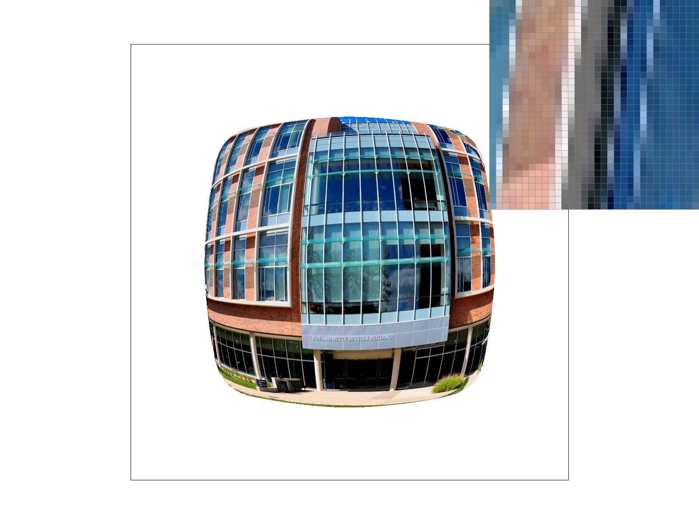
|

|
|
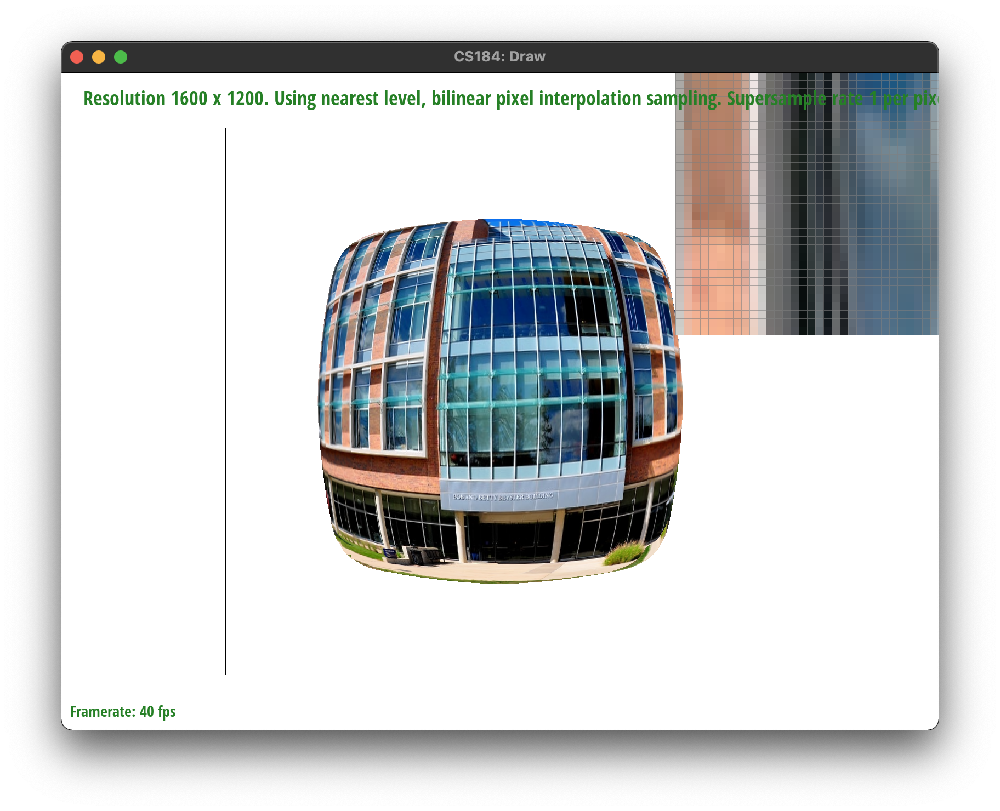
|
|
|
Section III: Art Competition
If you are not participating in the optional art competition, don't worry about this section!